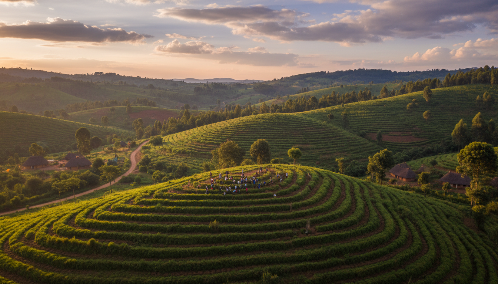

Vision
A future where communities have the power to thrive, regenerate their environments, and shape their own futures.

People closest to the challenges are often closest to the solutions.

For generations, communities have carried knowledge about seeds, soil, forests, food, water, and the relationships that sustain life. Modern development has often separated people from these systems. Homegrown Sustainability Solutions works to reconnect them.
We work with communities, especially women and young people, to turn local knowledge, ecological wisdom, and community-led innovation into solutions that regenerate livelihoods, landscapes, and futures.
A future where communities have the power to thrive, regenerate their environments, and shape their own futures.
To grow community leadership and regenerative solutions that strengthen livelihoods, restore ecosystems, and create resilient futures.
We believe the people closest to a challenge are often closest to its solution. Homegrown works alongside communities to strengthen their leadership, knowledge, networks, and innovations so solutions are grown with them.